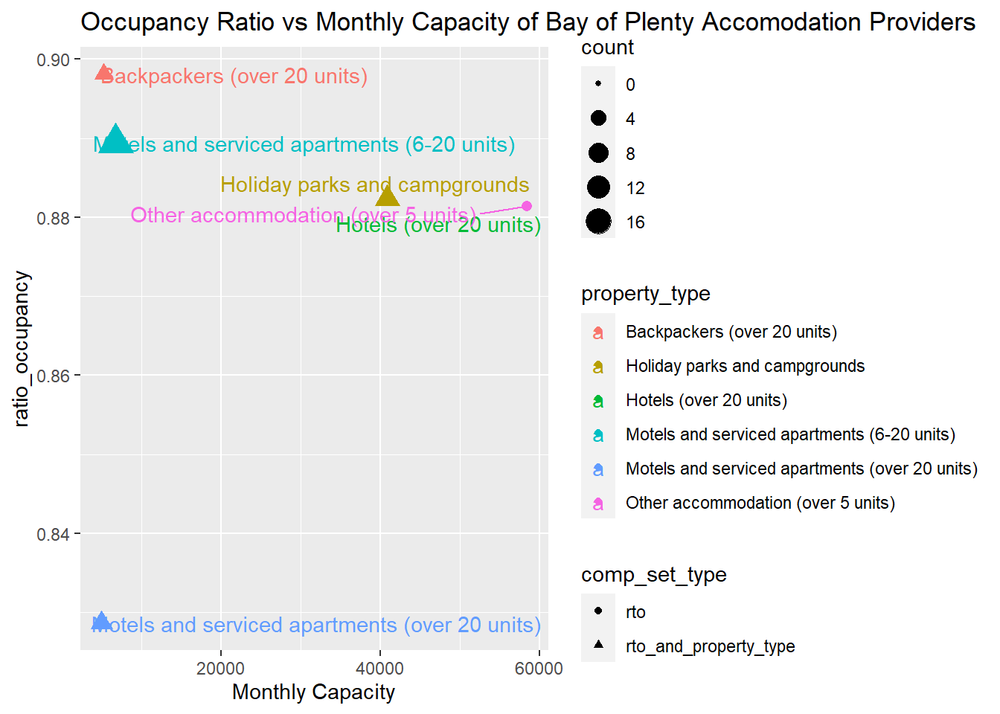
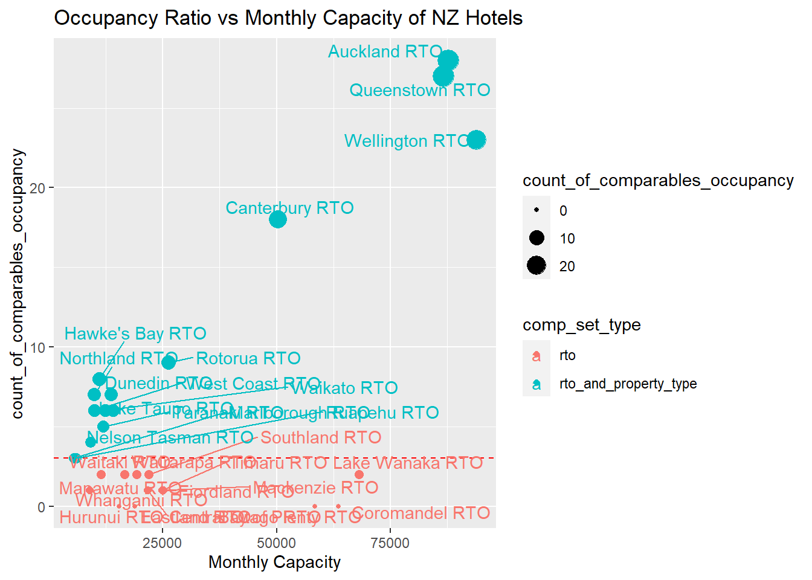

This R Markdown document will demonstrate the calculation of imputation for each of the below measures:
We will first inspect the first 6 rows of the data at the start of the imputation process. Where no data for a particular measure is provided, this is indicated by NA. The imputation process will seek to compute an imputed value in place of the NAs, based on data available from comparable properties. Properties which form the comparable set are determined by the RTO, property type, or both.
This first step involves finding the set of other comparable properties for each property. The set of comparable properties will consist of either
The former is used when there are sufficient respondents who have submitted data for a given attribute. If there are insufficient respondents, data from all respondents across the country sharing the same property type is used for imputation. This is done to protect the confidentiality of respondents, and also to increase the diversity of responses and to reduce the risk of one or two properties exerting undue influence on the imputation calculation.
Different imputations will require different fields of data. Currently, there are three ways to compute a set of comparable properties. For any given property, although the set of comparable properties for each imputation calculation is most likely to be the same, differences can arise when the group size is small and properties sharing the same property type within the RTO have submitted data for one attribute but not for an attribute for another imputation calculation.
df_grouped = properties%>%
group_by_at(c("rto", "property_type")) %>%
summarise(
# Count properties with at least one stay available unit night - This is used to determine `comp_set_type`
count_of_comparables_occupancy = sum(non_imputed_available_stay_unit_nights > 0, na.rm = T),
)%>%
ungroup()
df_grouped %>%
filter(rto == "Bay of Plenty RTO") %>%
kbl() %>%
kable_classic(full_width = F, html_font = "Cambria") %>%
kable_styling(bootstrap_options = c("striped", "hover", "condensed", "responsive")) %>%
scroll_box(width = "100%")| rto | property_type | count_of_comparables_occupancy |
|---|---|---|
| Bay of Plenty RTO | Backpackers (over 20 units) | 3 |
| Bay of Plenty RTO | Holiday parks and campgrounds | 7 |
| Bay of Plenty RTO | Hotels (over 20 units) | 0 |
| Bay of Plenty RTO | Motels and serviced apartments (6-20 units) | 17 |
| Bay of Plenty RTO | Motels and serviced apartments (over 20 units) | 5 |
| Bay of Plenty RTO | Other accommodation (over 5 units) | 1 |
# Determine comp set type and name
df_grouped = df_grouped %>%
mutate(
comp_set_type = ifelse(
count_of_comparables_occupancy >= 3,
"rto_and_property_type",
"property_type"),
comp_set_name = ifelse(
count_of_comparables_occupancy >= 3,
paste(rto, property_type, sep = ""),
property_type)
)
df_grouped %>%
filter(rto == "Bay of Plenty RTO") %>%
kbl() %>%
kable_classic(full_width = F, html_font = "Cambria") %>%
kable_styling(bootstrap_options = c("striped", "hover", "condensed", "responsive")) %>%
scroll_box(width = "100%")| rto | property_type | count_of_comparables_occupancy | comp_set_type | comp_set_name |
|---|---|---|---|---|
| Bay of Plenty RTO | Backpackers (over 20 units) | 3 | rto_and_property_type | Bay of Plenty RTOBackpackers (over 20 units) |
| Bay of Plenty RTO | Holiday parks and campgrounds | 7 | rto_and_property_type | Bay of Plenty RTOHoliday parks and campgrounds |
| Bay of Plenty RTO | Hotels (over 20 units) | 0 | property_type | Hotels (over 20 units) |
| Bay of Plenty RTO | Motels and serviced apartments (6-20 units) | 17 | rto_and_property_type | Bay of Plenty RTOMotels and serviced apartments (6-20 units) |
| Bay of Plenty RTO | Motels and serviced apartments (over 20 units) | 5 | rto_and_property_type | Bay of Plenty RTOMotels and serviced apartments (over 20 units) |
| Bay of Plenty RTO | Other accommodation (over 5 units) | 1 | property_type | Other accommodation (over 5 units) |
For some regions, there are fewer than 3 accomodation providers for a particular property type which have provided data for this particular field.
The confidentiality of accomodation providers within these groups is to be protected. To do so, the comparable property set will comprise of all properties of the same property type across all RTOs. When this occurs for a particular property type of an RTO, the comp_set_type is set as property_type.
In the code comp_set_name is a string concatenation of the rto and property_type (or just the property_type for when there are fewer than 3 comparables. Conceptually, comp_set_name can be thought of as a distinct market. For example, Auckland RTOHotels (over 20 units) represents the market of Hotels in the Auckland RTO Region.
For each comp_set_name, we will compute an operational ratio which will be used as an imputation ratio for all accomodation providers within this group (where an imputation is required).
The ratio calculation is as follows:
\[r= \frac{ \sum_{i \in\{i | X_{i\eta} > 0 \}} X_{i\eta} }{ \sum_{i \in\{i | X_{i\eta} > 0 \}} X_{i\delta} }\]
where
\(X\) an \(N \times 2\) matrix of values each columns \(X_\eta\) representing the values of the numerator variable and \(X_\delta\) representing the values of the denominator variable, where \(N\) is the number of accomodation providers within the comparable set.
\(r\) is an operational ratio to be imputed.
The ratio for imputing occupancy is given below. The comparable set only consists of accomodation providers for which data for guest arrivals has been provided. The numerator represents the total number of guest arrivals and the denominator represents the total monthly capacity, in the market given by comp_set_name.
\[r= \frac{ \sum_{i \in\{i | {guest\_arrivals}_{i} > 0 \}} guest\_arrivals_{i} }{ \sum_{i \in\{i | {guest\_arrivals}_{i} > 0 \}} monthly\_capacity_{i} }\]
df_grouped = properties%>%
group_by_at(c("rto", "property_type")) %>%
summarise(
# Count properties with at least one non_imputed_guest_arrival - This is used to determine `comp_set_type`
count_of_comparables_occupancy = sum(non_imputed_available_stay_unit_nights > 0, na.rm = T),
# Numerator
sum_non_imputed_available_stay_unit_nights = sum(non_imputed_available_stay_unit_nights[non_imputed_available_stay_unit_nights > 0], na.rm = T),
# Denominator
sum_monthly_capacity = sum(monthly_capacity[non_imputed_available_stay_unit_nights > 0], na.rm = T)
)%>%
ungroup()
# Determine comp set type and name
df_grouped = df_grouped %>%
mutate(
comp_set_type = ifelse(
count_of_comparables_occupancy >= 3,
"rto_and_property_type",
"rto"),
comp_set_name = ifelse(
count_of_comparables_occupancy >= 3,
paste(rto, property_type, sep = ""),
rto)
)
# Confidentialise
# For comp_set_type == 'property_type'
aggregations_comp_set_property.df <- df_grouped %>%
group_by(comp_set_name = rto) %>%
summarise(
sum_non_imputed_available_stay_unit_nights = sum(sum_non_imputed_available_stay_unit_nights),
sum_monthly_capacity = sum(sum_monthly_capacity)
)
imputation_per_property_type.df = inner_join(
x = df_grouped %>% select(comp_set_name, comp_set_type, rto, property_type, count_of_comparables_occupancy),
y = aggregations_comp_set_property.df,
by = c("comp_set_name" = "comp_set_name")
)
# For comp_set_type == 'rto_and_property_type'
imputation_per_rto_and_property_type.df = df_grouped %>%
filter(comp_set_type == "rto_and_property_type")
imputation_schedule_occupancy = rbind(imputation_per_property_type.df, imputation_per_rto_and_property_type.df)
# Compute Ratio
imputation_schedule_occupancy$ratio_occupancy = imputation_schedule_occupancy$sum_non_imputed_available_stay_unit_nights / imputation_schedule_occupancy$sum_monthly_capacity
imputation_schedule_occupancy %>%
filter(rto == "Bay of Plenty RTO") %>%
kbl() %>%
kable_classic(full_width = F, html_font = "Cambria") %>%
kable_styling(bootstrap_options = c("striped", "hover", "condensed", "responsive")) %>%
scroll_box(width = "100%")| comp_set_name | comp_set_type | rto | property_type | count_of_comparables_occupancy | sum_non_imputed_available_stay_unit_nights | sum_monthly_capacity | ratio_occupancy |
|---|---|---|---|---|---|---|---|
| Bay of Plenty RTO | rto | Bay of Plenty RTO | Hotels (over 20 units) | 0 | 51485 | 58410 | 0.8814415 |
| Bay of Plenty RTO | rto | Bay of Plenty RTO | Other accommodation (over 5 units) | 1 | 51485 | 58410 | 0.8814415 |
| Bay of Plenty RTOBackpackers (over 20 units) | rto_and_property_type | Bay of Plenty RTO | Backpackers (over 20 units) | 3 | 4688 | 5220 | 0.8980843 |
| Bay of Plenty RTOHoliday parks and campgrounds | rto_and_property_type | Bay of Plenty RTO | Holiday parks and campgrounds | 7 | 36053 | 40860 | 0.8823544 |
| Bay of Plenty RTOMotels and serviced apartments (6-20 units) | rto_and_property_type | Bay of Plenty RTO | Motels and serviced apartments (6-20 units) | 17 | 5977 | 6720 | 0.8894345 |
| Bay of Plenty RTOMotels and serviced apartments (over 20 units) | rto_and_property_type | Bay of Plenty RTO | Motels and serviced apartments (over 20 units) | 5 | 4077 | 4920 | 0.8286585 |
Lets have a look at the relationship between available monthly capacity and occupancy rates for accomodation providers within the Bay of Plenty RTO. A larger shape indicates that there are more accomodation providers within the comparable set.
imputation_schedule_occupancy %>%
filter(rto == "Bay of Plenty RTO") %>%
rename(`Monthly Capacity` = sum_monthly_capacity, count = count_of_comparables_occupancy) %>%
ggplot(aes(x = `Monthly Capacity`, y = ratio_occupancy, col = property_type)) +
geom_point(aes(shape = comp_set_type, size = count)) +
geom_text_repel(aes(label = property_type)) +
ggtitle("Occupancy Ratio vs Monthly Capacity of Bay of Plenty Accomodation Providers")
The below scatter plot shows the count of hotels within each RTO, against the total monthly capacity of hotels within the RTO. RTOs with more than three hotels (indicated by the red dashed line) have compset_type = rto_and_property_type, while RTOs with less than three hotels will have compset_type = rtoAs expected, the big attractions such as Auckland, Wellington and Queenstown have the highest capacity and will have plenty of comparables.
imputation_schedule_occupancy %>%
filter(property_type == "Hotels (over 20 units)") %>%
rename(`Monthly Capacity` = sum_monthly_capacity) %>%
ggplot(aes(x = `Monthly Capacity`, y = count_of_comparables_occupancy, col = comp_set_type)) +
geom_point(aes(size = count_of_comparables_occupancy)) +
ggtitle("Occupancy Ratio vs Monthly Capacity of NZ Hotels") +
geom_hline(aes(yintercept =3), linetype = 'dashed', col = 'red') +
geom_text_repel(aes(label = rto))
\[r= \frac{ \sum_{i \in\{i | {available\_stay\_unit\_nights}_{i} > 0 \}} available\_stay\_unit\_nights_{i} }{ \sum_{i \in\{i | {available\_stay\_unit\_nights}_{i} > 0 \}} monthly\_capacity_{i} }\]
\[r= \frac{ \sum_{i \in\{i | {occupied\_nights}_{i} > 0 \}} occupied\_nights_{i} }{ \sum_{i \in\{i | {occupied\_nights}_{i} > 0 \}} available\_stay\_unit\_nights_{i} }\]
\[r= \frac{ \sum_{i \in\{i | {guest\_nights}_{i} > 0 \}} guest\_nights_{i} }{ \sum_{i \in\{i | {guest\_nights}_{i} > 0 \}} occupied\_nights_{i} }\]
\[r= \frac{ \sum_{i \in\{i | {guest\_arrivals}_{i} > 0 \}} guest\_arrivals_{i} }{ \sum_{i \in\{i | {guest\_arrivals}_{i} > 0 \}} guest\_nights_{i} }\]
\[r= \frac{ \sum_{i \in\{i | {domestic\_nights}_{i} > 0 \}} domestic\_nights_{i} }{ \sum_{i \in\{i | {domestic\_nights}_{i} > 0 \}} guest\_nights_{i} }\]
The below function computes an imputation schedule for a particular imputation measure.
compute_imputation_schedule <- function(
df,
numerator_field,
denominator_field,
imputation_name
){
df_grouped = df %>%
# filter_at(vars(numerator_field), ~ .>0) %>%
group_by_at(c("rto", "property_type")) %>%
summarise_(
count = interp(
~sum(var > 0, na.rm = T),
var = as.name(numerator_field)),
numerator = interp(~sum(var[var > 0], na.rm = T), var = as.name(numerator_field)),
denominator = interp(~sum(var[numerator_var > 0], na.rm = T), var = as.name(denominator_field), numerator_var = as.name(numerator_field))
) %>% ungroup()
# Determine comp set type and name
df_grouped = df_grouped %>%
mutate(
comp_set_type = ifelse(
count >= 3,
"rto_and_property_type",
"property_type"),
comp_set_name = ifelse(
count >= 3,
paste(rto, property_type, sep = ""),
property_type)
)
# Confidentialise
aggregations_comp_set_property.df <- df_grouped %>%
group_by(comp_set_name = property_type) %>%
summarise(
numerator = sum(numerator),
denominator = sum(denominator)
)
imputation_per_property_type.df = inner_join(
x = df_grouped %>%
select(comp_set_name, comp_set_type, rto, property_type, count),
y = aggregations_comp_set_property.df,
by = c("comp_set_name" = "comp_set_name")
)
imputation_per_rto_and_property_type.df = df_grouped %>%
filter(comp_set_type == "rto_and_property_type")
# Row bind the imputation schedules for both `rto_and_property_type` and either `rtop` or `proprety_type`
imputation_schedule = rbind(imputation_per_property_type.df, imputation_per_rto_and_property_type.df)
imputation_schedule = imputation_schedule %>%
rename_at("comp_set_type", ~paste(imputation_name, "comp_set_type", sep = "_")) %>%
rename_at("comp_set_name", ~paste(imputation_name, "comp_set_name", sep = "_")) %>%
rename_at("count", ~ paste(imputation_name, "imputation_comparables_count", "count", sep = "_")) %>%
# Calculate Ratio
mutate(ratio = numerator/denominator) %>%
# Rename Columns
rename_at("numerator", ~ paste(imputation_name, "sum", numerator_field, sep = "_")) %>%
rename_at("denominator", ~ paste(imputation_name,"sum", denominator_field, sep = "_")) %>%
rename_at("ratio", ~paste(imputation_name, "ratio", sep = "_"))
return(imputation_schedule)
}#test
imputation_guest_nights = compute_imputation_schedule(
df = properties,
numerator_field = "non_imputed_guest_nights",
denominator_field = "non_imputed_occupied_nights",
imputation_name = "guest_nights"
)## `summarise()` ungrouping output (override with `.groups` argument)imputation_guest_nights %>%
filter(rto == "Bay of Plenty RTO")## # A tibble: 6 x 8
## guest_nights_comp_set_n~ guest_nights_comp~ rto property_type guest_nights_imputat~ guest_nights_sum_no~ guest_nights_sum_no~ guest_nights_ra~
## <chr> <chr> <chr> <chr> <int> <dbl> <dbl> <dbl>
## 1 Hotels (over 20 units) property_type Bay of~ Hotels (over 20 un~ 0 354997 200028 1.77
## 2 Other accommodation (ov~ property_type Bay of~ Other accommodatio~ 1 14449 7501 1.93
## 3 Bay of Plenty RTOBackpa~ rto_and_property_~ Bay of~ Backpackers (over ~ 3 2179 2116 1.03
## 4 Bay of Plenty RTOHolida~ rto_and_property_~ Bay of~ Holiday parks and ~ 6 14121 5786 2.44
## 5 Bay of Plenty RTOMotels~ rto_and_property_~ Bay of~ Motels and service~ 12 6467 3593 1.80
## 6 Bay of Plenty RTOMotels~ rto_and_property_~ Bay of~ Motels and service~ 4 3732 2030 1.84# Our five imputation schedules are as follows:
imputation_available_stay_unit_nights = compute_imputation_schedule(
df = properties,
numerator_field = "non_imputed_available_stay_unit_nights",
denominator_field = "monthly_capacity",
imputation_name = "available_stay_unit_nights"
# property_type = "rto"
)
imputation_occupied_nights = compute_imputation_schedule(
df = properties,
numerator_field = "non_imputed_occupied_nights",
denominator_field = "non_imputed_available_stay_unit_nights",
imputation_name = "occupied_nights"
)
imputation_guest_nights = compute_imputation_schedule(
df = properties,
numerator_field = "non_imputed_guest_nights",
denominator_field = "non_imputed_occupied_nights",
imputation_name = "guest_nights"
)
imputation_guest_arrivals = compute_imputation_schedule(
df = properties,
numerator_field = "non_imputed_guest_arrivals",
denominator_field = "non_imputed_guest_nights",
imputation_name = "guest_arrivals"
)
imputation_domestic_nights = compute_imputation_schedule(
df = properties,
numerator_field = "non_imputed_domestic",
denominator_field = "non_imputed_guest_nights",
imputation_name = "domestic_nights"
)The below code demonstrates how the operational ratio is used to compute an imputation for occupied_nights. In this scenario, property 1318 is a property in the Bay of Plenty RTO with property type Holiday parks and campgrounds. We look up the property and the rto in the respective imputation schedule for occupied_nights. Since there are 6 properties with the same property type within the Bay of PLenty RTO, the set of comparables will consist of 5 properties (excluding property 1318).
To compute the imputed occupied nights, we simply multiply the operational ratio with with the available_stay_unit_nights of property 1318, as so:
\[Occupied\_Nights_{1318} = r \times occupied\_nights_{1318} \]
where
\[r= \frac{ \sum_{i \in\{i | {guest\_nights}_{i} > 0 \}} guest\_nights_{i} }{ \sum_{i \in\{i | {guest\_nights}_{i} > 0 \}} occupied\_nights_{i} }\]
filtered.df = properties%>%
filter(fresh_id == 1318) %>%
select(fresh_id, rto, property_type, non_imputed_guest_nights, non_imputed_occupied_nights)
# Lookup the rto and property type in the imputation comp set table
filtered.df = left_join(
x = filtered.df,
y = imputation_guest_nights,
by = c("rto", "property_type")
)
# Multiply the ratio by the respective field
filtered.df$imputed_guest_nights = filtered.df$guest_nights_ratio * filtered.df$non_imputed_occupied_nights
# Final Imputed Value
filtered.df$imputed_guest_nights## [1] 7687.72kbl(filtered.df)%>%
kable_classic(full_width = F, html_font = "Cambria") %>%
kable_styling(bootstrap_options = c("striped", "hover", "condensed", "responsive")) %>%
scroll_box(width = "100%")| fresh_id | rto | property_type | non_imputed_guest_nights | non_imputed_occupied_nights | guest_nights_comp_set_name | guest_nights_comp_set_type | guest_nights_imputation_comparables_count_count | guest_nights_sum_non_imputed_guest_nights | guest_nights_sum_non_imputed_occupied_nights | guest_nights_ratio | imputed_guest_nights |
|---|---|---|---|---|---|---|---|---|---|---|---|
| 1318 | Bay of Plenty RTO | Holiday parks and campgrounds | NA | 3150 | Bay of Plenty RTOHoliday parks and campgrounds | rto_and_property_type | 6 | 14121 | 5786 | 2.440546 | 7687.72 |